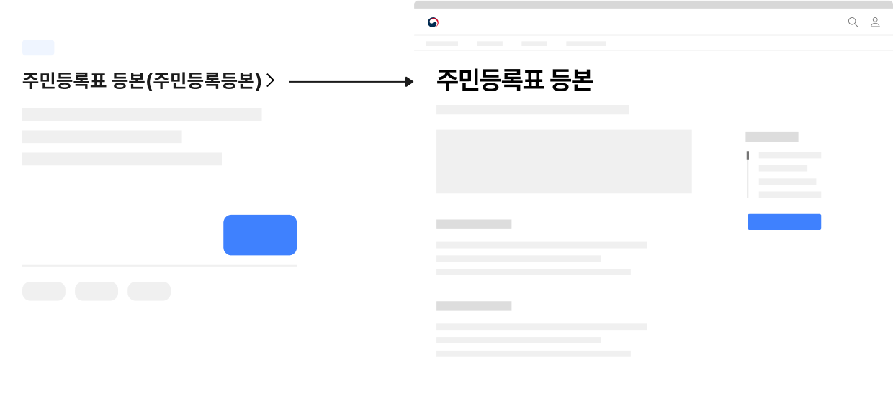
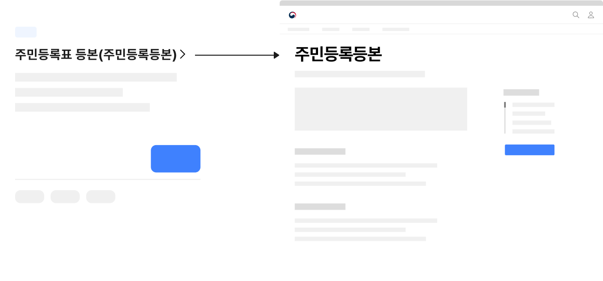

서비스 패턴 신청신청 대상 탐색
신청은 사용자가 서비스 제공 기관에 요구 사항을 알리기 위해 서식을 작성하는 과업으로 관련 법률에 명시된 종류의 민원 외에 사용자가 특정한 내용을 요청하는 모든 행동을 포함한다.
구조
- 1. 필터링·정렬 컨트롤: 신청 서비스 목록을 필터링·정렬하는 데 사용되는 컨트롤
- 2. 페이지네이션: 신청 서비스 목록을 탐색하는 데 사용되는 컨트롤
- 3. 항목: 정보를 식별하기 위한 콘텐츠 집합으로 개별 항목에 대해 실행할
기능 관련 버튼, 상세 정보를
확인할 수 있는 탐색 링크가 포함될 수 있음
a. 제목:서비스명을 보여주는 텍스트. 상세 화면으로 이동하기 위한 링크로 사용됨
b. 꺾쇠/화살표:제목이 링크로 작동함을 안내하는 시각적 단서
c. 미리보기/요약:서비스에 대한 기본적인 정보를 요약하여 보여주는 텍스트
d. 배지:서비스의 이용 가능 상태에 대한 메타 데이터를 표시하여 다음 중 하나의 상태를 가질 수 있음
· 예정됨
· 접수 중
· 마감됨
e. 메타 데이터:신청 서비스에 부여된 여러 데이터 속성(예 - 분야, 연령, 소득 등)을 표시하는 텍스트
f. 저장 컨트롤:관심 있는 신청 정보를 모아보기 위해 개인화된 기록을 저장하는 데 사용되는 컨트롤
g. 액션 버튼:신청하기 버튼 등 항목에 대해 수행할 수 있는 기능 사용을 유도하기 위한 컨트롤을 제공함
사용성 가이드라인
-
신청 서비스의 특성에 따른 적절한 서비스 목록 정렬
방식을 사용한다. 권장
모든 서비스를 상시 신청할 수 있는 경우: 가나다순으로 정렬
한시적으로 운영되거나 신청 인원에 따라 마감되는 신청인 경우: 현재 신청 가능한 서비스를 우선적으로 배치 -
목록을 적절한 방식으로 군집화하여 메타 데이터를
부여한다. 권장
사용자가 목록에서 원하는 서비스를 빠르게 탐색할 수 있도록 서비스의 특성과 사용자의 요구에 따라 메타 데이터를 설계하고 부여해야 한다.
-
신청 상태 정보를 명확하게 인지할 수 있도록 표현한다. 필수
한시적으로 운영되거나 신청 인원에 따라 마감되는 서비스인 경우, 신청 상태 정보 표현을 위한 배지를 반드시 제공하여 사용자가 목록과 서비스 정보를 효과적으로 탐색할 수 있게 해야 한다.
[모범 사례]
-
미리보기/요약에 신청 가능 기한 정보를 제공한다. 권장
한시적으로 운영되는 서비스인 경우 미리보기/요약에 기한 정보를 추가하여 상세 정보 화면으로 이동하지 않고도 서비스에 대해 빠르게 파악할 수 있게 만든다.
[모범 사례]

-
제목에 공식적인 서비스 명칭을 사용한다. 필수
제목은 사용자가 신청 서비스 목록을 탐색하기 위해 활용하는 가장 기본적인 정보로 임의의 축약어를 사용하거나 공식 명칭과는 부분적으로 다른 단어를 사용하였을 때 사용자에게 혼동을 줄 수 있다. 만약 공식 명칭 대신 일반적으로 사용자에게 통용되는 용어가 있다면 괄호 내부에 보조적인 설명을 제공하거나 목록의 텍스트 필터(부분 검색)에서 해당 용어로 검색했을 때 결과로 제공되도록 하는 것이 바람직하다.
[모범 사례]
[피해야 할 사례]
 -
제목에 말줄임표를 사용하지 않는다. 필수
사용자가 정확한 신청 서비스 명칭을 확인할 수 있도록 제목 텍스트에 말줌임표를 사용하여 자르지 않아야 한다. 일반적인 신청 서비스 명칭의 텍스트 길이를 확인하여 목록의 높이를 지정하고 제목이 여러 줄로 떨어지는 경우에는 카드 열 개수의 조정, 리스트형으로의 레이아웃 변경 등을 고려해야 한다.
-
미리보기/요약 텍스트는 간결하게 작성한다. 권장
상세 정보 확인 전에 사용자가 탐색 과정에서 도움을 받을 수 있는 정보만 간결하게 표시되도록 한다.
-
상세 화면을 거치지 않고 신청 과정에 바로 접근할 수 있는
액션 버튼을 제공한다. 권장
"신청하기" 링크를 클릭하면 또 다른 대상 선택 화면 대신 유의 사항 및 자격 확인 또는 신청서 작성 양식으로 연결되어 사용자가 의도한 행동을 수행할 수 있게 설계해야 한다.
-
외부 서비스로 이동하거나 새 창을 실행하는 액션 버튼에
명확한 시각적 단서를 제공한다. 권장
새 창 열림 아이콘을 표시하여 사용자가 원하지 않는 상황에서 현재의 이용 맥락을 벗어나지 않도록 한다.
접근성 가이드라인
-
공유/저장 컨트롤과 액션 버튼에 명확한 접근 가능한
이름을 제공한다.
스크린 리더 사용자가 컨트롤 요소를 단위로 탐색을 시도하는 경우, 목록에 동일한 레이블을 가진 컨트롤 요소가 다수 제공되었을 때 각 컨트롤 요소를 통해 기능을 실행하는 대상 정보를 명확하게 파악하기 어려울 수 있다. 각 컨트롤 요소에 title 속성 또는 aria-describedby 속성을 활용하여 접근 가능한 이름이 변별될 수 있도록 해야 한다.
- KWCAG 2.2 적절한 링크 텍스트
- WCAG 2.1 Headings and Labels (AA)
- WCAG 2.1 Label in Name (A)
- WCAG 2.1 Name, Role, Value (A)
관련 구성 요소
컴포넌트
기본 패턴
마크업 예시
| 1Depth | 2Depth | 3Depth | File Link |
|---|---|---|---|
| 서비스 신청 | 카드형 | 선택 전 | html 화면 확인하기 |
| 선택 후 | html 화면 확인하기 | ||
| 리스트형 | 선택 전 | html 화면 확인하기 | |
| 선택 후 | html 화면 확인하기 |